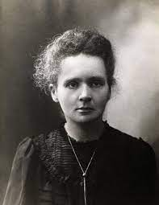
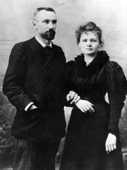
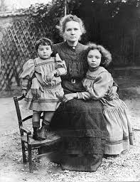

Marie Curie
“Você não pode esperar construir um mundo melhor sem melhorar os indivíduos.
Para esse fim, cada um de nós deve trabalhar para o seu próprio aperfeiçoamento e,
ao mesmo tempo, compartilhar uma responsabilidade geral por toda a humanidade.”
Um pouco de sua história
Marie Curie nasceu em 7 de novembro de 1867, na cidade de Varsóvia, na Polônia.
Seu nome de batismo era Maria Salomea Sklodovska, sobrenome herdado de seu pai, professor de Matemática e Física.
Nascida em um lar em que a ciência era o centro da família, Marie Curie sempre se interessou pelo conhecimento.
Vivendo em um país dominado pela Rússia czarista, que não permitia o acesso das mulheres à educação formal, Marie Curie, por diversas vezes, montou grupos de estudos clandestinos para poder estudar e promover o conhecimento para outras pessoas.
Em 1891, com a ajuda financeira do pai, Marie Curie conseguiu mudar-se para Paris, onde ingressou no curso de licenciatura em Física da Faculté de Sciences, que concluiu em 1893 e em 1894, concluiu também o curso de Matemática.
Durante sua busca por um tema e por um orientador para seu doutorado, Marie conheceu o professor de Física Pierre Curie, com quem acabou casando-se em 1895. Os dois tiveram duas filhas, Éve e Irène.

Grandes Feitos
Em 1903, Marie Curie defendeu sua tese com o tema “Pesquisa de substâncias radioativas”, trabalho que foi considerado pela banca como a maior contribuição científica de uma tese de doutorado, o período de pesquisas dos Curie sobre a radioatividade,
eles descobriram que dois elementos químicos tinham maior radioatividade do que o urânio.
Em 1898, Marie anunciou à Academia Francesa de Ciências a descoberta do rádio e do polônio (batizado em homenagem à Polônia). A descoberta dos elementos rádio e polônio renderam à Marie Curie o Nobel de Química, em 1911, o que a tornou a única pessoa no mundo com dois Nobel em áreas científicas diferentes.
Curie percebeu que os raios X seriam importantes para tratar ferimentos de balas e fraturas, por isso, colocou em prática um serviço de radiografia móvel. As descobertas de Marie Curie foram muito importantes no tratamento do câncer, cientista recolhia o gás que o elemento
rádio emanava e enviava o material para diversos hospitais pelo mundo para tratar tumores por meio da irradiação.

Reconhecimento até os dias atuais
Por sua contribuição científica e persistência, Marie Curie é ainda bastante lembrada e citada em encontros científicos, congressos ou jornadas acadêmicas.
Além disso, vários são os hospitais e centros que levam o seu nome, como o Instituto Curie, o qual auxilia na formação de diversos novos cientistas todos os anos.
Vale ressaltar que um elemento químico, descoberto em 1944, denominado Cúrio (Cm), de número atômico 96, foi batizado assim em homenagem ao casal Marie e Pierre Curie.